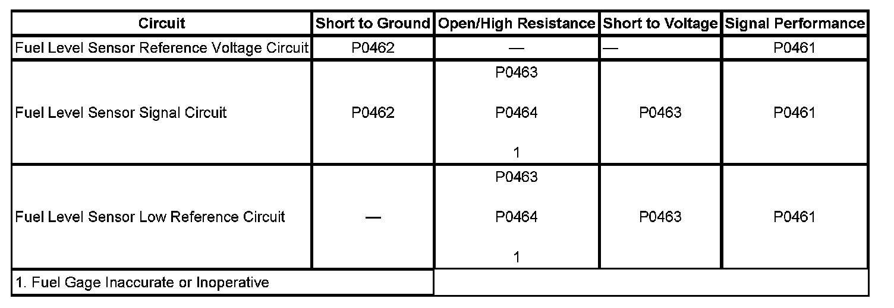

P0464
DTC P0464
DTC DESCRIPTOR
DTC P0464
Fuel Level Sensor 1 Circuit Intermittent
DIAGNOSTIC FAULT INFORMATION

Perform the Diagnostic System Check - Vehicle prior to using this diagnostic procedure. Initial Inspection and Diagnostic Overview
CIRCUIT/SYSTEM DESCRIPTION
The fuel level sensor changes resistance in response to the fuel level. The engine control module (ECM) monitors the signal circuit of the fuel level sensor in order to determine the fuel level. When the fuel tank is full, the sensor resistance is low and the ECM senses a low signal voltage. When the fuel tank is empty, the sensor resistance is high and the ECM senses a high signal voltage. The ECM uses the signal circuit of the fuel level sensor in order to calculate the percentage of remaining fuel in the tank. The ECM sends the fuel level percentage via GMLAN serial data circuit to the instrument cluster in order to control the fuel gage. The fuel information is also used for misfire, evaporative emission (EVAP), and other on-board diagnostics.
This diagnostic tests for an intermittent fuel level sender signal. If a change in fuel level is detected DTC P0442 is aborted due to a possible refueling event. A refueling event test is executed to confirm that a refueling event has occurred. If refueling is confirmed, the test for DTC P0464 is considered passing. The refueling event test must pass 2 out of 3 times, otherwise, the DTC will set indicating an intermittent signal problem.
CONDITIONS FOR RUNNING THE DTC
- The ignition is OFF.
- DTC P0442 is running.
CONDITIONS FOR SETTING THE DTC
- The fuel level change is greater than 10 percent.
- The above condition is present for less than 30 seconds.
- Both conditions above occur 2 out of 3 times as part of a refueling event test.
ACTION TAKEN WHEN THE DTC SETS
- DTC P0442 is aborted.
- The ECM records the operating conditions at the time the diagnostic fails. The ECM displays the failure information in the Failure Records on the scan tool.
CONDITIONS FOR CLEARING THE DTC
- The DTC becomes history when the conditions for setting the DTC are no longer present.
- The history DTC clears after 40 malfunction-free warm-up cycles.
- The ECM receives a clear code command from the scan tool.
DIAGNOSTIC AIDS
Using the Failure Records data may help locate an intermittent condition. If you cannot duplicate the DTC, the information in the Failure Records can help determine how many miles since the DTC set. The Fail Counter and Pass Counter can help determine how many ignition cycles that the diagnostic test reported a pass and/or a fail.
CIRCUIT/SYSTEM TESTING
1. Ignition OFF, disconnect the harness connector at the fuel level sensor. Install a signal generator and instrument panel tester between the signal circuit and the low reference circuit.
2. Ignition ON, vary the resistance on the signal generator from 40-250 ohms. Verify that the scan tool Fuel Tank Level Remaining parameter displays the correct fuel level percent.
- If the fuel level percent is incorrect, test the signal circuit and the low reference circuit for an open/high resistance. If the circuits test normal, replace the ECM.
3. If all circuits test normal, test or replace the fuel level sensor.
REPAIR INSTRUCTIONS
Perform the Diagnostic Repair Verification after completing the diagnostic procedure.
- Fuel Level Sensor Replacement (1500 Series) Fuel Level Sensor Replacement (1500 Series w/E85) Fuel Level Sensor Replacement (2500 - 43.5L (11.5 gal) Tank - Rear) Fuel Level Sensor Replacement (2500 - 98.4L (26 gal) Tank - Front) for the 4.8L, 5.3L, 6.0L, and 6.2L engines
- Control Module References for ECM or IPC replacement, setup, and programming. Programming and Relearning Verification Tests